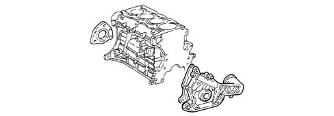
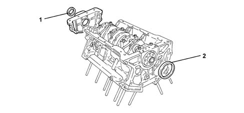

1020D OIL SEALS ON CRANK SHAFT
- Path
- Descriptions > 10 ENGINE UNIT > 1020 CRANKCASE SUMP AND COVERS > 1020D OIL SEALS ON CRANK SHAFT
- Kind
- system description
- Applies to
- engines: 2.0 JTS, 3.2 V6, 1.9 JTD 16V; all production periods
- Interactive page
- https://sloeber94.github.io/elrnDB-aGt/en/#/125000256
Applies to: engines: 2.0 JTS; all production periods
CONSTRUCTION FEATURES
The crankshaft front seal is produced by an oil seal fitted on the front cover (oil pump casing).
The crankshaft rear fluid-tightness is ensured by an oil seal incorporated in the rear cover.

Applies to: engines: 3.2 V6; all production periods
CONSTRUCTION FEATURES
The crankshaft front seal (1) and rear seal (2) are achieved by oil seals fitted directly on the relevant covers.
The seal between rear main journal cap and crankcase is achieved by silicone sealant.

Applies to: engines: 1.9 JTD 16V; all production periods
CONSTRUCTION FEATURES
The crankshaft front fluid-tightness is ensured by an oil seal fitted on the front cover (oil pump casing).
The crankshaft rear fluid-tightness is ensured by an oil seal incorporated in the rear cover.